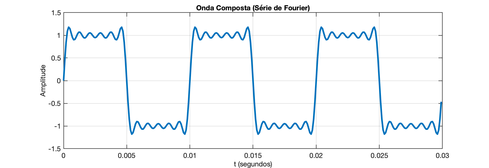
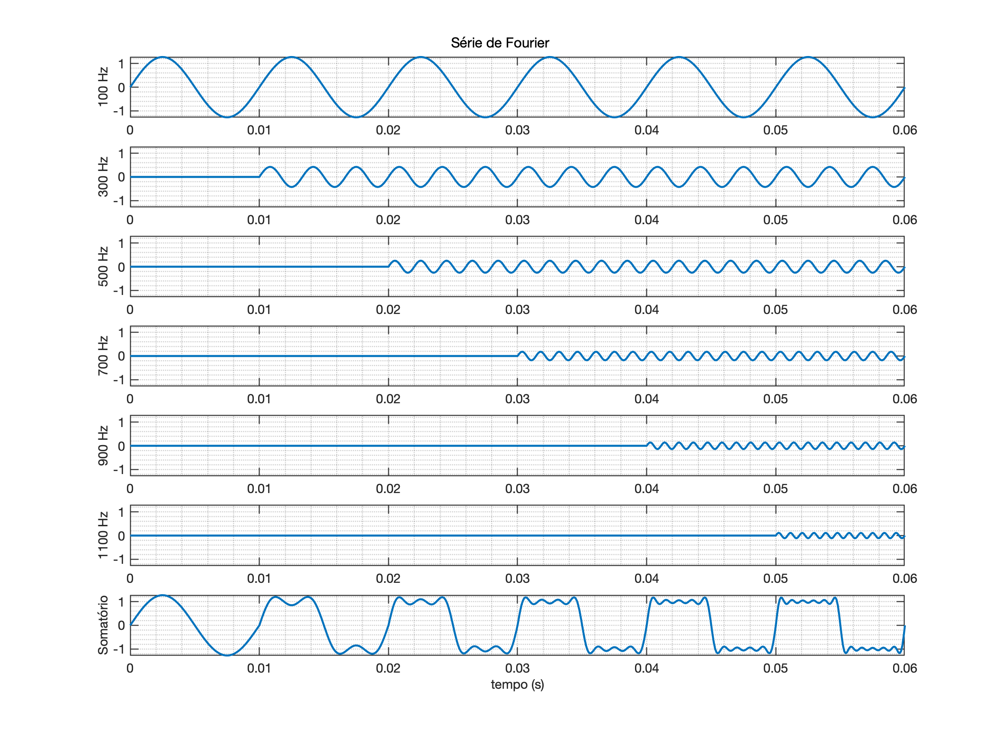
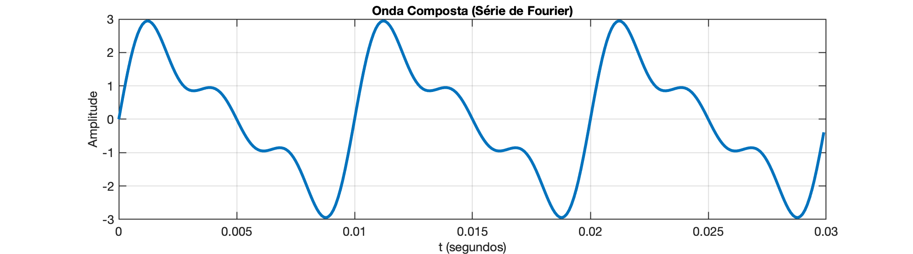
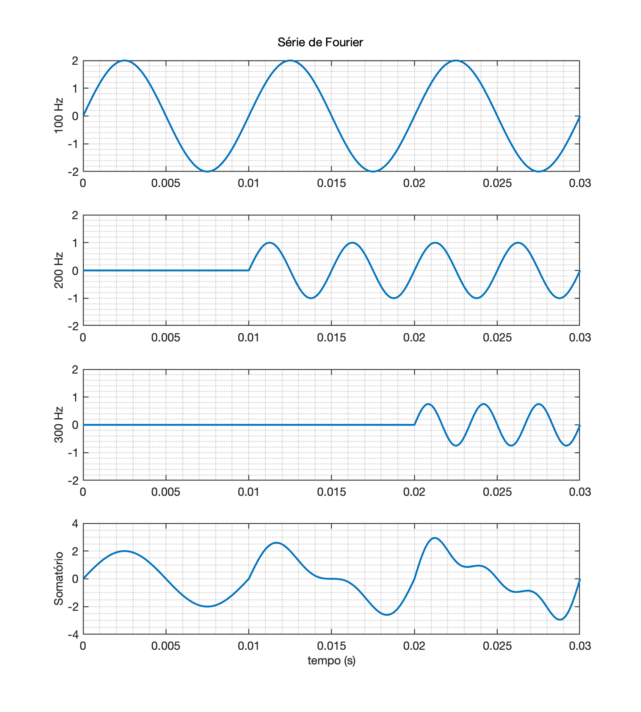

Problemas Propostos. Seguem problemas para serem resolvidos mas sem objetivo de avaliação. Esta atividade não conta como avaliação, mas serve como um guia para possíveis questões numa prova ou prova final da disciplina. Fica ao inteiro critério do estudante, resolver ou não estes problemas.
🎧.
Problema 1: Recompanha o sinal de uma onda Quadrada oscilando em 100 Hz, com 1 Volt de pico e duty-cycle de 50%, variando o número de harmônicas usadas para compor a onda. Tente sintetizar até a 11a-harmônica (6 componentes inicias). Deve ser obtido algo como:

Referências: Síntese de Onda Quadrada.
A título de curiosidade, o gráfico abaixo mostra a onda quadrada sendo sintetizada à medida que novas harmônicas são acrescentadas:

Problema 2: Tente obter o sinal mostrado no gráfico abaixo:

Sendo informado que o mesmo possui apenas componentes senoidais nas frequências de 100, 200 e 300 Hz e que a amplitude destes componentes é, respectivamente:

Fim
Gráficos gerandos usando "/UPF/Sistemas_Amostrados/1_Fourier/serie_teste.m".
Fernando Passold, em 15/10/2026.